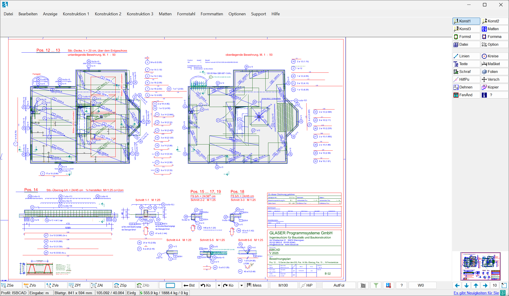

Das Konstruktions- und Bewehrungsprogramm (kurz: ISBCAD) ist der zentrale Arbeitsbereich. Je nach Installationsumfang können Sie hier Konstruktionspläne zeichnen, Bewehrungen anlegen, Positionierungen erzeugen sowie Zeichnungsdaten exportieren, drucken und plotten.
 |
Installationsumfang
Konstruktions- und Bewehrungsprogramm |
|
|---|---|
Konstruktionsprogramm |
Bewehrungsprogramm |
·Konstruktion und Vermaßung ·Plangestaltung und -ausgabe ·Im- und Export von DXF, DWG und PDF als Vektordaten ·Erstellen von Schnitten aus 3D-Modellen im IFC-Format ·Statische Positionierungen ·Massen- und Schwerpunktermittlung ·Holzbau ·Hüllflächenberechnung ·Stücklisten ·Über 100 Schraffurarten ·Einfügen von Word-, Excel- und PDF-Dateien ·Unterstützte Bildformate: PNG, JPG, TIF, GIF, ICO, DIB ·Automatische Folienbelegung ·Einfügen von Notizen |
·Bewehrung beliebiger Konstruktionen ·Formstahlelemente, Matten und Formmatten ·Assistentengestützte Standardbewehrungen (z. B. Details wie Rahmenecken, Auswechslung von Durchbrüchen usw.) ·Integrierte FEM-Methoden mit Bewehrungsvorschlägen ·Mindestverankerungs- und Übergreifungslängen gemäß Eurocode 2 ·Erzeugung von Laufenden Metern ·Gefächerte Voutenverlegung an Kreisbögen ·Kontrollmechanismen für Bewehrungsverlegungen inklusive Positionierung ·Erstellung von Einzel- und Gesamtstahllisten ·Unterstützung von BVBS 3.1 ·Umfangreiche Schnittstellen |
Konstruktionsprogramm
Das Konstruktionsprogramm ist die Basisanwendung in ISBCAD. Es wird zum Erstellen von 2D-Konstruktionszeichnungen mit geometrischen Formen und Elementen, Maßketten, Texten und anderen Zeichenelementen benötigt.
Mit den Funktionen des Konstruktionsprogramms können Grundrisse, Ansichten, Schnitte, Ausführungs- und Detailzeichnungen für sämtliche Bereiche des Hoch- und Tiefbaus erstellt werden. Sollen einzelne Pläne mit unterschiedlichen Detaillierungsgraden gezeichnet werden, können Sie beliebige Maßstabsbereiche hinzufügen und Detailzeichnungen sofort im benötigten Maßstab erstellen.
Beschriftungen können als Einzeltexte oder in Textblöcken hinzugefügt werden. Mit dem integrierten Texteditor stehen umfangreiche Möglichkeiten zur Auszeichnung von Blocktexten zur Verfügung. Ebenfalls im Konstruktionsprogramm enthalten sind komfortable Funktionen für die Massen- und Schwerpunktermittlung mit teilautomatisierter Beschriftung und die Generierung vorkonfigurierter Tabellen.
Schriftfelder, Blattfahnen, Blattumrandungen und auch Faltmarken in der Zeichnung ergänzen die für die Planausgabe erzeugten Druck- oder Plotdateien. Schnittstellen zum Im- und Export von Daten im DXF-, DWG- und PDF-Format sind ebenfalls enthalten.
Es sind bereits die notwendigen Programmteile vorhanden, um Stahl-, Biege- und Stücklisten manuell zu erstellen. Die Geometrie für FEM-Berechnungen kann erzeugt und an FEM-Berechnungsprogramme übergeben werden. Ergebnisse aus FEM-Berechnungen können eingelesen und angezeigt werden.
Weitere Bestandteile:
·GLASER ISB Statik Link
Verknüpfung einzelner Positionen im Positionsplan mit den Statik-Programmen der FRILO Software GmbH (falls installiert) und automatischer Start der Berechnung.
·Hüllflächenberechnung
Komfortable Flächen- und Volumenermittlung und Datenübergabe an die EnEV-Programme zahlreicher Hersteller (Kern, Hottgenroth, ENVISYS, ROWA-Soft, Helena, etc.).
·Stücklistenprogramm
Freies Anlegen von Positions- und Stücklistentexten zur Positionierung. Die Ausgabe der Stückliste erfolgt auf der Zeichnung. Alternativ kann eine Textdatei zur weiteren Bearbeitung in z. B. Microsoft Excel® erstellt werden.
·PDF-Export
Kostenlose Testversion des eDocPrinter PDF Pro für schnelles und komfortables Exportieren in das PDF-Format.
Bewehrungsprogramm
Das Bewehrungsprogramm ist ein Bestandteil von ISBCAD. Es ergänzt die Basisfunktionen aus dem Konstruktionsprogramm um Funktionen zum Erstellen von Bewehrungsplänen.
Die Bewehrung kann sowohl aus Lager‑ oder Listenmatten als auch aus Rundstahl bestehen. Die Bewehrungsroutinen sind so allgemein gehalten, dass Fertigteile, Wände, Vouten, Konsolen oder auch z. B. Brückenquerschnitte und andere beliebige Bauteile bewehrt werden können. Stahllisten, Biegelisten sowie Schneideskizzen für Lagermatten können programmseitig ausgegeben werden.
Durch Verknüpfung von Bewehrungs-Zeichnungen können Änderungen automatisch in alle angeschlossenen Darstellungen übernommen werden. Bei Änderungen der Geometrie passt sich die Bewehrung in Form und Anzahl automatisch an.
Assistentengestützte Standardbewehrungen
Erstellen und Editieren kompletter Verlegungen inklusive der zugehörigen Auszüge per Mausklick. Biegeformen lassen sich aus Katalogen wählen oder einfach an beliebigen Schalkanten ableiten und im Anschluss verlegen. Die Stückzahl wird automatisch ermittelt. Sie kann jederzeit in den Stahllisten, deren Erstellung ebenfalls automatisch erfolgt, eingesehen werden.
Finite-Elemente-Methoden (FEM)
Für großflächige Bauteile, die mit der FE-Methode berechnet wurden, können die Berechnungsergebnisse automatisch in einen Bewehrungsvorschlag umgesetzt werden. Die Grundbewehrung kann dabei aus Matten oder Stabstahl bestehen. Der Bewehrungsvorschlag auf Basis der Rechenergebnisse kann mit wenigen Handgriffen zu einer baustellengerechten Verlegung optimiert werden.
Lage und Durchmesser der Stabstahlzulagen werden ebenfalls FEM-gerecht ermittelt. Die Mindestverankerungs- und Übergreifungslängen werden dabei natürlich berücksichtigt. Die Daten folgender Software-Produkte können eingelesen und zur Erzeugung automatischer Bewehrungsvorschläge verarbeitet werden: Pollux, Dlubal, Scia, RIB, Dr. Tornow, D.I.E., mb-AEC, PCAE, Cedrus, Infograph, Dr. Hartmann, FRILO Software GmbH, AxisVM, pro-soft (ABC), ALLFEM.
Siehe auch: